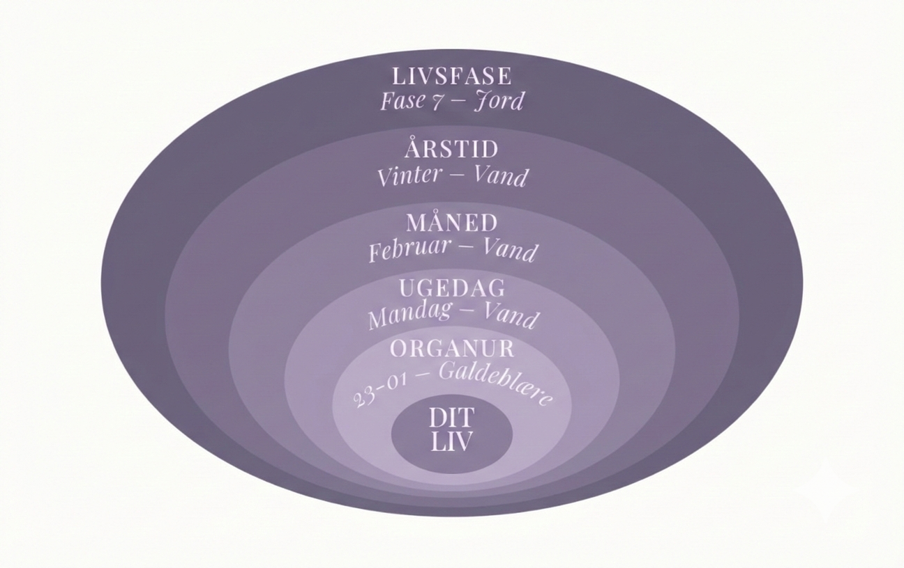

Cyklus-skift
Ild → Jord
Fra eksplosion til modning. Fra at skabe til at nære. Fra at brænde til at bære.

Dette skift i dig
Jeg husker det som en morgen, hvor jeg pludselig ikke havde travlt. Ikke fordi der var mindre at gøre — men fordi noget indefra sagde stop. Kroppen vidste det før jeg gjorde. Skiftet fra Ild til Jord er ikke en beslutning. Det er en erkendelse der siver ind langsomt — og en dag er den bare der.

Hvad sker der
Ilden slukker ikke — den samler sig
I den kinesiske medicin er Ild og Jord forbundet i den skabende cyklus: Ild nærer Jord. Den intensitet og varme du bar i Ild-fasen forsvinder ikke — den omdannes. Den bliver til noget fastere, varmere, mere bærende.
Skiftet fra Ild til Jord er et af de mest mærkbare i et kvindeliv. Ild-fasen er kendetegnet ved ekspansion — relationer, ambitioner, kroppen på sit stærkeste. Jord-fasen er noget andet. Det er indsamlingen. Hvad vil du bære videre? Hvad er du klar til at sætte ned?
Krop & sind
Kroppen
Energien svinger mere. Perioder med høj intensitet følges af et behov for hvile der føles nyt. Milt og Maven overtager — de beder om varme, regelmæssighed og ro.
Sindet
Spørgsmålene ændrer sig. Fra "hvad vil jeg opnå?" til "hvad betyder det egentlig?" Det er ikke tab af retning — det er dybde der vokser frem.
Tegn på balance
En kvinde der er i god kontakt med Jord-energien i dette skift mærker en ny slags ro. Hun søger ikke bekræftelse udefra på samme måde som før. Der er en tilfredshed der begynder at vokse indefra — ikke fordi livet er perfekt, men fordi hun er begyndt at samle det hun allerede har.
Tegn på ubalance
Fysiske tegn
Fordøjelsen arbejder tungere — maven er mere følsom og reagerer på stress
Træthed der ikke letter med søvn — en dyb udtømmelse i kroppen
Søde trang og behov for at spise hyppigere — Miltens signal om ubalance
Mentale tegn
Overtænkning der kører i ring — har jeg gjort det rigtigt?
Bekymring der ikke har noget konkret at hænge på — en baggrundstøj af uro
Sorg over det der ikke kan gentages — Ild-fasens energi og muligheder
Skiftets temaer
Ild-fasen krævede noget af dig. Den brændte stærkt og tog meget. En del af dette skift handler om at anerkende hvad du bar — og at give dig selv tilladelse til at sætte det ned. Ikke som kapitulation, men som visdom.
Det er ikke det samme som at give op. Det er at vide hvad der er dit, og hvad der aldrig var det. Jord-elementet er selektivt — det tager kun det der nærer, og lader resten gå.
I dette skift begynder du at mærke at du er midtpunktet mellem generationerne. Børnene vokser til og har brug for en ny slags tilstedeværelse. Forældrene nærmer sig en alder, hvor du ser dem anderledes. Du bærer begge dele.
Det er Jord-elementets opgave: at holde. At binde. At være der. Det er ikke let — men det er præcis det Jord-energien er skabt til.
Der er et paradoks i dette skift: du har aldrig haft mere erfaring og klogskab — og alligevel kan det føles som om noget mangler. Yoga-filosofien kalder det aparigraha — evnen til at modtage uden at gribe.
Fylde er ikke noget man når frem til — det er noget man opdager at man allerede har.
Øvelser for dette skift
Krop
Langsom gåtur
Halvér dit tempo. Mærk hver fod der rører jorden — hælen, fodsålen, tæerne. Ti til femten minutter forankrer kroppen i Jord-energien.
Åndedræt
Varme i midten
Hænderne på maven. Ånd ind i fire tæl ned i maven, hold i to, ud i seks tæl. Forestil dig et bål i kroppens midte der samler sig. Otte til ti gentagelser.
Meridian
Mavens meridian
Stryg med begge hænder fra brystet ned over maven, ned ad lårenes forside til fødderne. Med tyngde og varme, fem til syv gange.
Yin Yoga
Sfinksen med vrid
Læg dig på maven i sfinksen. Drej langsomt overkroppen mod den ene side og bliv der. To til tre minutter på hver side — åbner Milt-meridianen.
Sind
Hvad bærer du videre?
Skriv alt du skabte, oplevede og lærte i Ild-fasen. Skriv derefter tre ting du er klar til at sætte ned — og tre frø du vil bære ind i Jord.
Refleksion
Hvad bragte Ild-fasen dig, som du ikke vidste du havde brug for — og hvad er du klar til at bære videre ind i Jord?
Skriv i din journal →
Skiftets råd
Tillad det langsomme. Jord-energien bygges ikke med hast. En simpel daglig rutine er mere nærende end store sporadiske indsatser.
Næring fra Jordens farver. Gule og orange fødevarer — hirse, søde kartofler, græskar — varmt og kogt. Milten trives med varme.
Stol på dit Vand. Som Vand-natur finder du instinktivt vejen rundt om forhindringer. Din Vand-natur finder lavpunkterne og samler sig der — stille og vedholdende.